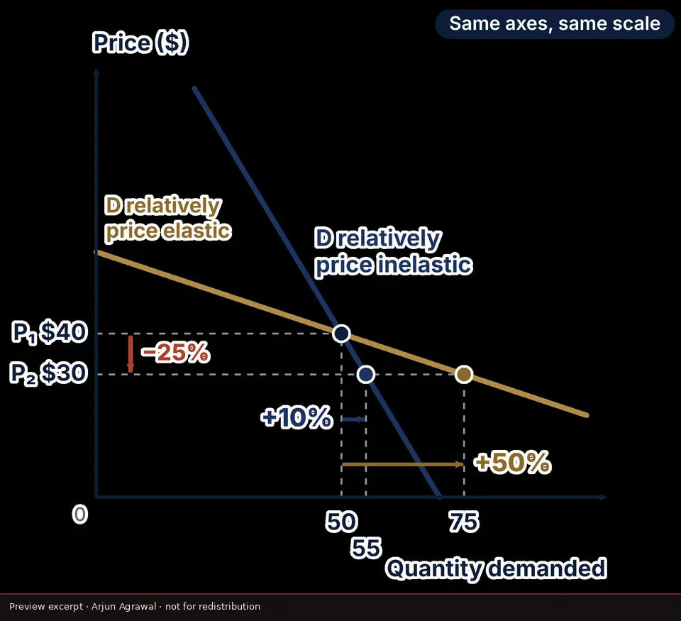
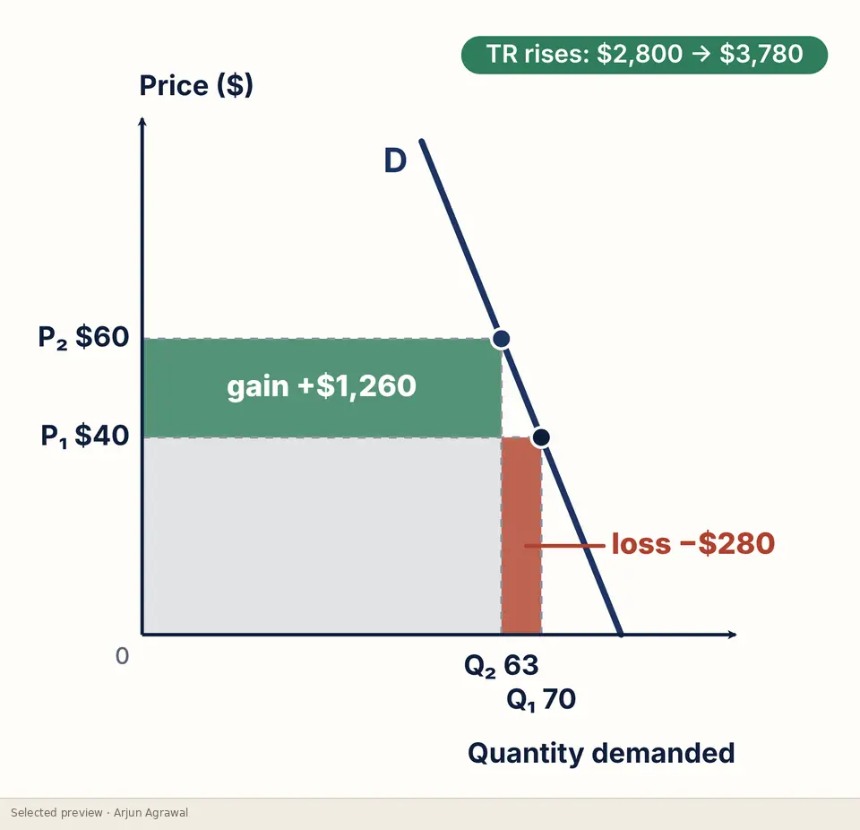
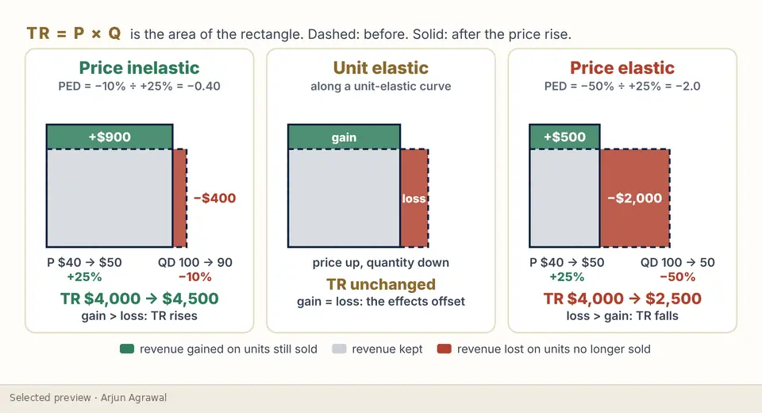
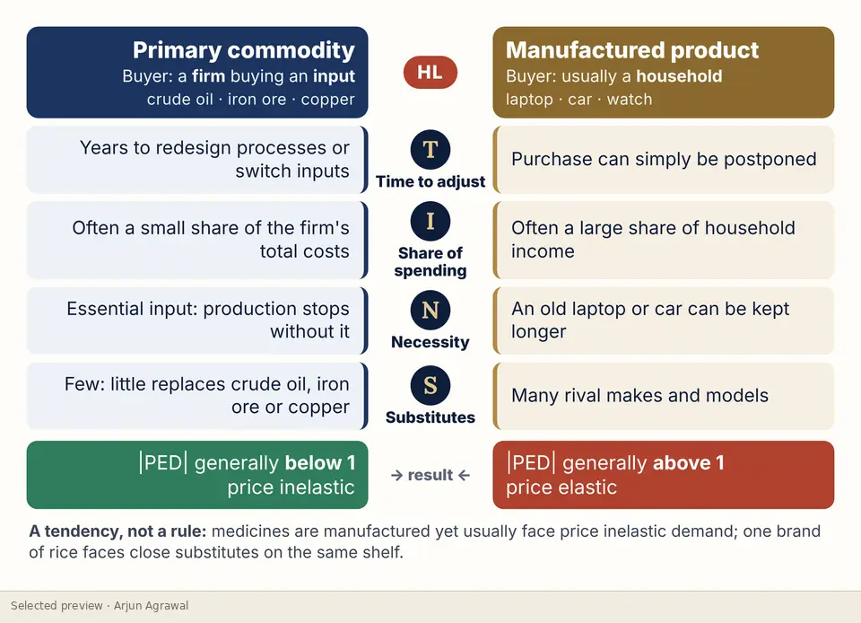
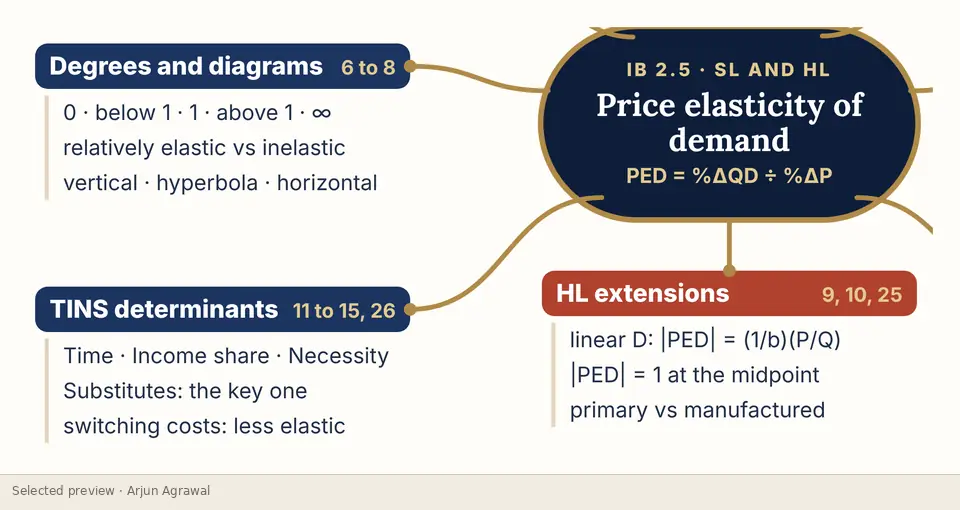

Home / Learning Studio / Price elasticity of demand
Visual explainer · Unit 2.5, with HL extension
Price elasticity of demand
Price elasticity of demand taught as a sequence of drawn models rather than a formula to memorise: from the coefficient and its sign, through the five cases on the same axes, to what elasticity does to revenue, tax revenue and who pays a tax.
- Type
- Visual explainers
- Format
- Slide sequence: 20 diagrams and infographics
- Level
- SL and HL (HL slides labelled)
- For
- Students, Teachers
- Topics
- Microeconomics, Elasticity, Total revenue, Tax incidence
- Checked
- 15 October 2026. All 20 slides read. Every figure on the five excerpts recomputed. The elastic and inelastic labels on the first excerpt were moved to sit on their own curves (corrected at source, 15 October 2026).





What it helps learners do
- Calculate PED and classify it from its magnitude, handling the negative sign explicitly
- Compare elastic and inelastic demand on the same axes and the same scale
- Use rectangles of P × Q to explain why a price rise can raise or lower total revenue
- Explain how PED decides the share of an indirect tax paid by consumers and producers
- HL: show why PED changes along a straight-line demand curve
The thinking behind it
Every comparison is drawn on the same axes and the same scale, so the reader sees the difference in responsiveness instead of being told about it. Revenue is shown as areas that gain and lose, with the figures printed on the diagram so each one can be checked by hand. Determinants are taught as a tendency, not a rule.
What the complete resource contains
- The coefficient, the sign convention and the spectrum from perfectly inelastic to perfectly elastic
- Elastic and inelastic demand compared on one set of axes
- The perfectly elastic, perfectly inelastic and unit-elastic cases
- HL: PED along a linear demand curve, worked at four points
- Determinants: time, share of income, necessity and substitutes
- Total revenue as an area, and the total-revenue curve
- Tax revenue and tax incidence under elastic and inelastic demand
- Primary commodities against manufactured products
- Ten common errors, and a one-page revision map
Interested in exploring more?
This page shows a small selection of excerpts. The complete resource is not published online. If you are a teacher, a student or a school interested in it, please get in touch, and I will reply personally.
Ask about this resourceOpen it in the StudioOn the platform
Independent resources by Arjun Agrawal. They are not produced or endorsed by the International Baccalaureate Organization, and none of the questions shown is an IB examination question.